Sakata
Sakata · Yamagata
Sakata
Highlighted on the Yamagata map.
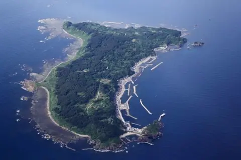
Stay
月のホテル
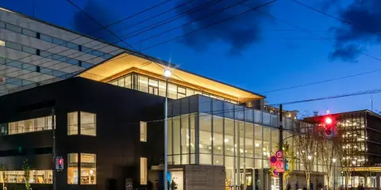
Gatsu No Hoteru
Hotel in Sakata, Yamagata.
若葉旅館
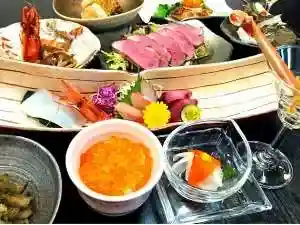
Wakaba Ryokan
Ryokan inn in Sakata, Yamagata.
地蔵の湯旅館
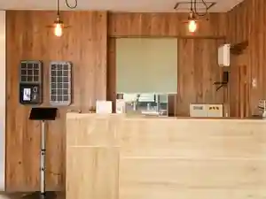
Jizou No Yu Ryokan
Ryokan inn in Sakata, Yamagata.
酒田グリーンホテル
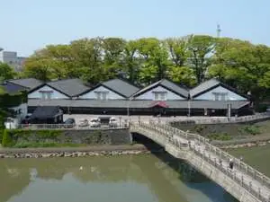
Sakata Guriinhoteru
Hotel in Sakata, Yamagata.
最上屋旅館
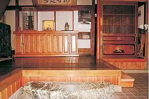
Saijou Ya Ryokan
Ryokan inn in Sakata, Yamagata.
たびのホテルlit酒田
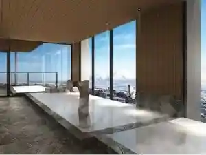
Tabino Hoteru Lit Sakata
Hotel in Sakata, Yamagata.
酒田ステーションホテル
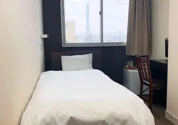
Sakata Suteeshonhoteru
Hotel in Sakata, Yamagata.
日和山ホテル
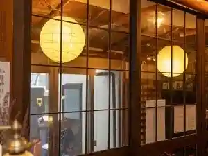
Hiyoriyama Hoteru
Hotel in Sakata, Yamagata.
Dining
ケンちゃんラーメン 本店
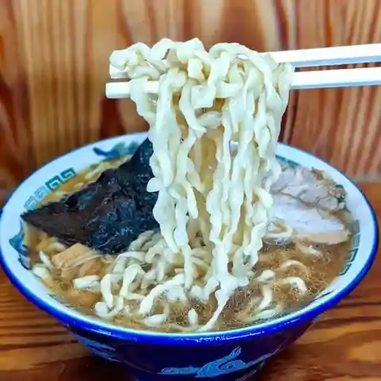
Ken Chan Raamen Honten
Ramen shop in Sakata, Yamagata.
大松家
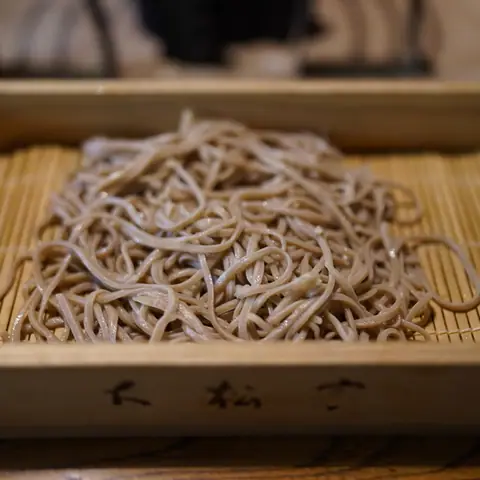
Oomatsu Ie
Soba restaurant in Sakata, Yamagata.
ワンタンメンの満月 酒田本店
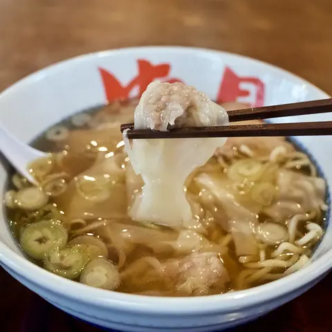
Wantanmen No Mangetsu Sakata Honten
Ramen shop in Sakata, Yamagata.
こい勢
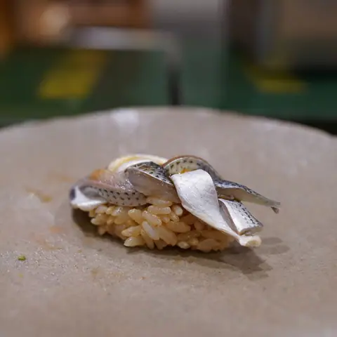
Koi Sei
Sushi restaurant in Sakata, Yamagata.
みなと市場 小松鮪専門店
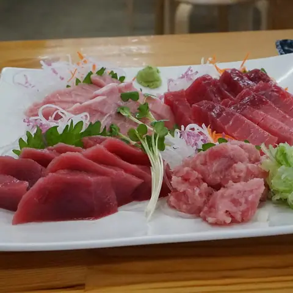
Minato Shijou Komatsu Maguro Senmonten
Seafood restaurant in Sakata, Yamagata.
Ｎico
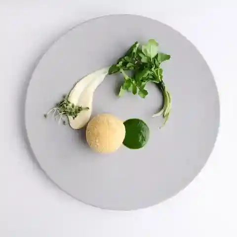
N Ico
French restaurant in Sakata, Yamagata.
わたり 本店
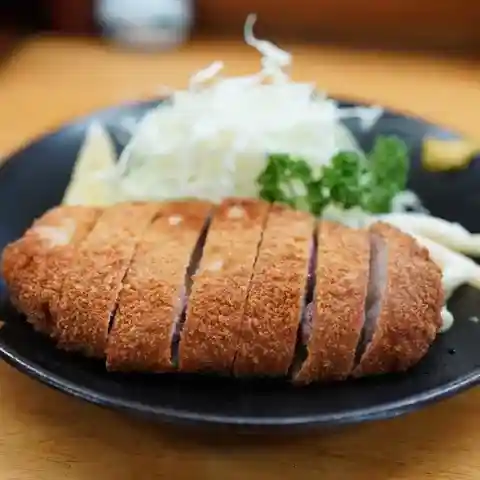
Watari Honten
Tonkatsu restaurant in Sakata, Yamagata.
中華そば 雲ノ糸 酒田店
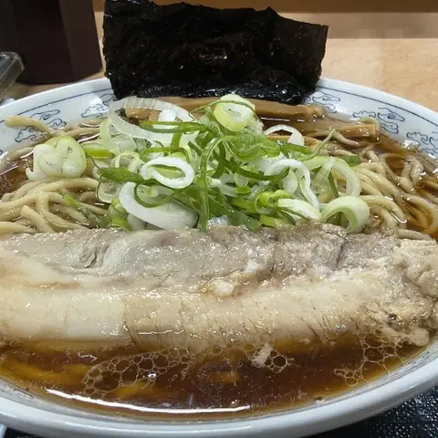
Chuuka Soba Kumo No Ito Sakata Mise
Ramen shop in Sakata, Yamagata.
花鳥風月
Kachoufuugetsu
Ramen shop in Sakata, Yamagata.
照月
Shou Gatsu
Ramen shop in Sakata, Yamagata.
旬味 鮮心 魚屋 富重
Jun Aji Sen Kokoro Sakanaya Tomi Juu
Seafood restaurant in Sakata, Yamagata.
久村の酒場
Hisamura No Sakaba
Izakaya in Sakata, Yamagata.
味龍
Aji Ryuu
Ramen shop in Sakata, Yamagata.
新月
Shingetsu
Ramen shop in Sakata, Yamagata.
とびしま
Tobishima
Seafood restaurant in Sakata, Yamagata.
カフェeジェラート モアレ
Kafe E Jieraato Moare
Gelato and ice-cream shop in Sakata, Yamagata.
イカ恋食堂
Ika Koi Shokudou
Seafood-bowl restaurant in Sakata, Yamagata.
寿司・割烹 鈴政
Sushi Kappou Suzu Matsurigoto
Sushi restaurant in Sakata, Yamagata.
さらしな
Sarashina
Ramen shop in Sakata, Yamagata.
日和山 小幡楼 ヒヨリベーカリー＆カフェ
Hiyoriyama Obata Rou Hiyoribeekarii & Kafe
Café in Sakata, Yamagata.
癒庵
Yu Iori
Tsukemen shop in Sakata, Yamagata.
Ravi
Ravi
French restaurant in Sakata, Yamagata.
麺屋酒田inみなと
Men Ya Sakata In Minato
Ramen shop in Sakata, Yamagata.
旬味 井筒
Jun Aji Izutsu
Local-cuisine restaurant in Sakata, Yamagata.
Sights
Tobishima Island
A remote island "Hishima" where you can interact with nature and people.
Tamasudare Falls
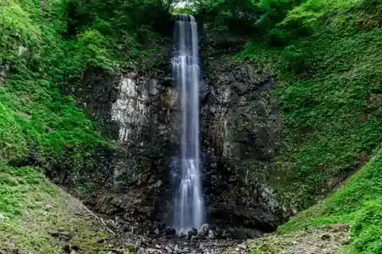
These dramatic vertical falls over a sheer cliff face were a location for ascetic Zen training
Sakata Seafood Market
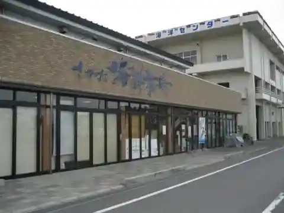
Right by Sakata Port, selling fish fresh from the Sea of Japan. Sugawara Fish on the ground floor specialises in local catch and can advise on cooking or pack fish to take home, and there is an eat-in corner.
Sankyo Soko Storehouse
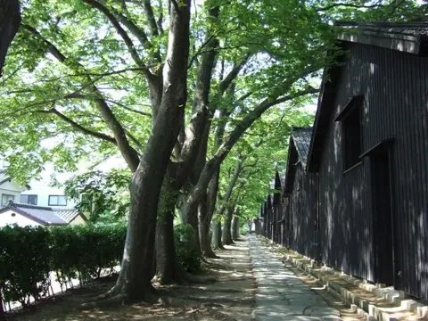
These functioning rice storehouses form a picturesque view with their black wooden walls lined with a row of Keyaki trees
Kaikoji Temple
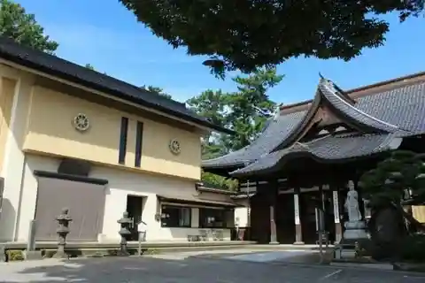
https://yamagatakanko.com/en/attractions/detail_11841.html
Somaro (Maiko Teahouse and Takehisa Yumeji Museum)
The renovated Somaya, Sakata's leading restaurant since the Edo period, reopened in 2000. Its wooden main house was built around surviving storehouses after the 1894 Shonai earthquake fire and is a registered cultural property.
Hiyoriyama Park
Learn about the historic port town of Sakata at this park with an iconic white lighthouse and traditional white sailing ship!
Homma Art Museum
The museum's main building, Seienkaku, was built in 1813 and faces the Kakubuen scenic garden, with a new wing completed in 1968. It once hosted the Shonai domain lords and shogunate officials, and later imperial family members.
Former Honma Family Residence
Feel the spirit of simplicity and fortitude at the residence of Japan’s richest merchant!